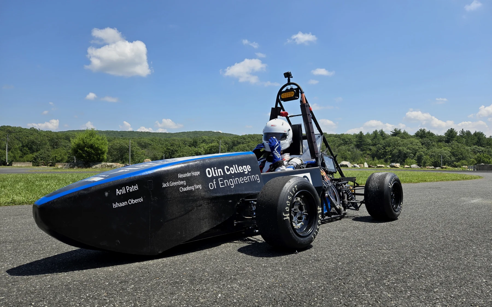
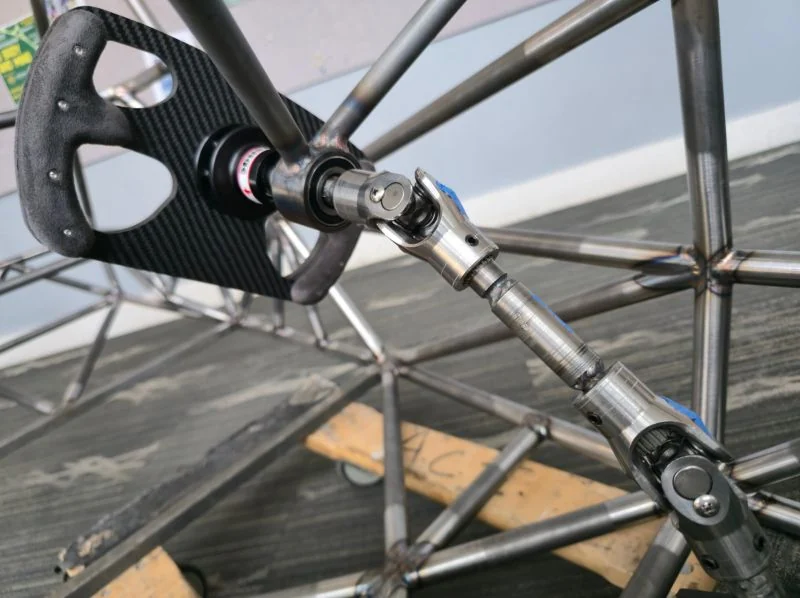
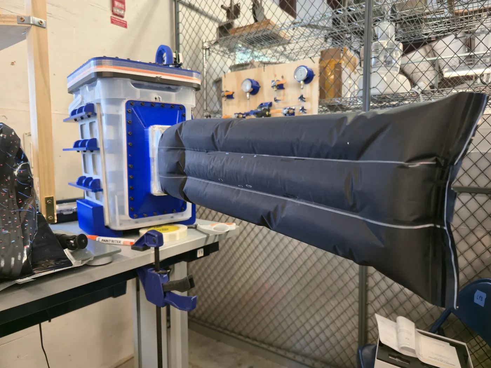

Mk.8 steering system
Closer driver reach; 0.9 kg removed from the bearing cages.

MECHANICAL ENGINEERING / OLIN ’28
Race-car systems.
Robotics. Real hardware.
Designed, built,
and tested.
01 / SELECTED WORK
Hover over a project and scroll to see it move.Drag a project’s slider to see it move.
Open it for the full engineering story.
Showing 16 of 16 projects
Closer driver reach; 0.9 kg removed from the bearing cages.

Pressure-test failures drove reinforcement and a 45-run study.

Design review: 23% less rotor mass, 19% less inertia.

Gantry motion and calibration produced a 2,206-point scan.

A built VTOL airframe working toward a 300 km/h target.

30 tensile specimens and 11 rods supplied measured stiffness.

200 lb payload target; 300 lb carried in testing.

20-ply 3K twill shell with local patch plies; cured, demolded and trimmed.

Designed and fabricated the Mk.7 seat in 5052-H32 aluminum.

An auditable Fluent workflow built from 11 real failures.

Adjustable cue launcher, working after machining and fit revisions.

33.6% lighter; 18 s lap against an under-15 s target.

A 2.5-day gantry build exposed an actuator duty-cycle limit.

Raw walnut, CNC routing, and fixtures led to a playable guitar.

About $80 prototype cost; student trials shaped the kit.

Cone-handling mechanisms for a Massachusetts Championship winning alliance.
Every project has its own story: interactive motion, original build photos, and technical results.
No matching projects. Try another search or category.

30 ENGINEERS. ONE RACE CAR.
I lead 30 mechanical engineers across four subteams, from design reviews and fabrication to vehicle integration. Previously, I led the cockpit: brakes, steering, and driver fit.
THE INTERACTIVE PORTFOLIO
Explore the space. Pick up a project. Look at the engineering from every angle.
Enter the 3D Studio Move through the room · Rotate and inspect the models EXPLORE IN 3D
EXPLORE IN 3D
02 / HOW I WORK
Design decisions belong in the shop.
Test results belong in the next design.



Turn constraints into load cases, kinematics, and buildable assemblies.
SolidWorks · MATLAB · FEA · CFD
Thermal & structural modelingCarry tolerances, tooling, and assembly access from CAD to the finished part.
CNC · Lathe · TIG · Composites
From machined parts to steering systemUse calibrated sensors and physical tests to challenge the model.
Python · Arduino · Sensors · Testing
Calibration in practice03 / LET’S BUILD SOMETHING
Seeking a Summer 2027 internship in
vehicle systems, robotics, or manufacturing.